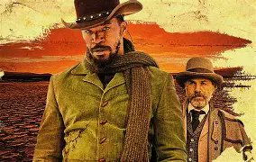
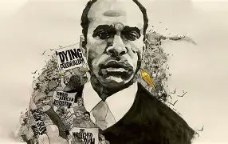
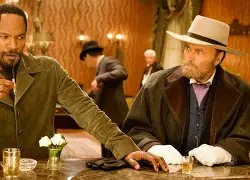

Negro Homem e Homem Negro
7 de maio de 2026
Em Django Livre, há uma inversão simbólica do sujeito e de seus atributos nesse sentido, o filme dramatiza o que pensadores como Fanon e Stuart Hall discutem: como a identidade negra é socialmente marcada antes de qualquer outra característica.

A luta por direitos é também uma luta pelo direito de inverter a inversão, colocar o humano em primeiro plano, sem apagar a diferença racial, mas sem permitir que ela seja redutora ou desumanizadora.
Linguisticamente, em português diríamos “homem negro”, mas no universo do filme ao qual se assemelha ao nosso, o olhar dominante reverte a ordem: o que se vê primeiro é o “negro”, e só depois o “homem”. A inversão de prioridade revela o mecanismo da desumanização.
A teoria de Frantz Fanon, em Pele Negra, Máscaras Brancas, ajuda a entender essa operação: o colonizado, e especialmente o negro, não é reconhecido como sujeito universal, mas reduzido à sua cor de pele, à diferença que o separa do padrão branco.

No filme, Django só é tratado como homem quando o Dr. King Schultz o liberta e, sobretudo, quando passa a ser funcional para a lógica do caçador de recompensas. Antes disso, ele é apenas um “negro escravo”, uma categoria inferiorizada.

O adjetivo “negro” ocupa o lugar de substantivo, e “homem” quase desaparece. É a ilustração cinematográfica da inversão: ele não é “um homem que é negro”, mas “um negro que, por acaso, é homem”.